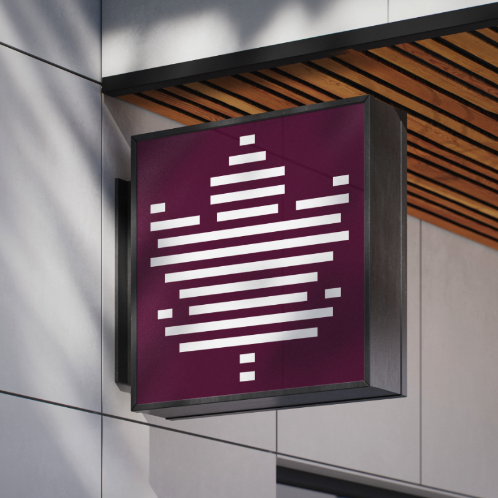
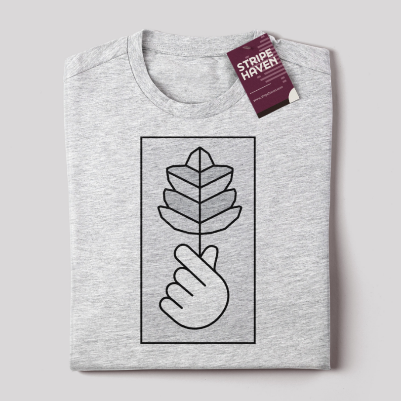
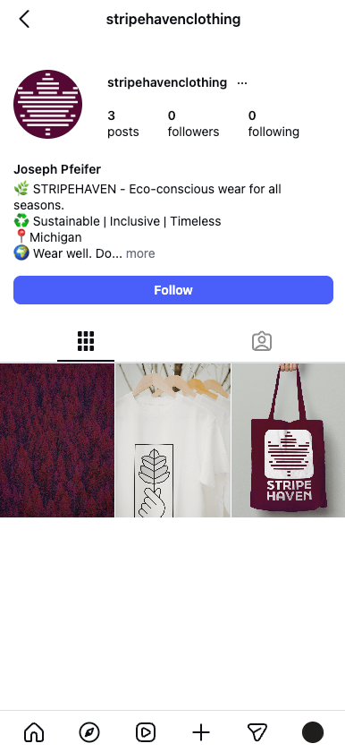

STRIPEHAVEN is a comprehensive branding project developed for a fictional modern clothing company. The objective was to create a visual identity that conveys travel, sustainability, and conscious living. I developed a logo system based on geometric abstraction, ensuring the mark remains legible and impactful across various scales—from small stationery to large-format architectural signage. The logo itself is modeled after a maple leaf.

The brand is rooted in a calm, clean aesthetic. I utilized a high-contrast palette of maple burgundy, black, and white to evoke a sense of professional reliability and sleekness. The typography, FinalSix, was selected to balance formality with modern approachable curves, reflecting the project's goal of being both "conscious" and "structured."

